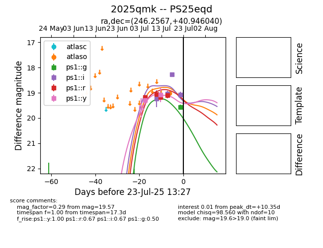

Target 2025qmk at 2025-07-23 13:27, see:
TNS: wis-tns.org/object/2025qmk
YSE: ziggy.ucolick.org/yse/transient_detail/2025qmk
alt names
2025qmk (yse,tns)
PS25eqd (panstarrs)
coordinates:
equatorial (ra, dec) = (246.2567,+40.94604)
galactic (l, b) = (64.8631,+44.39941)
photometry
last atlaso=19.02, ps1::g=19.57, ps1::i=19.07, ps1::r=19.10, ps1::y=19.09
1 atlaso, 1 ps1::g, 4 ps1::i, 4 ps1::r, 2 ps1::y detections
